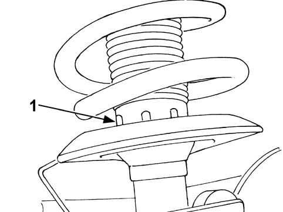
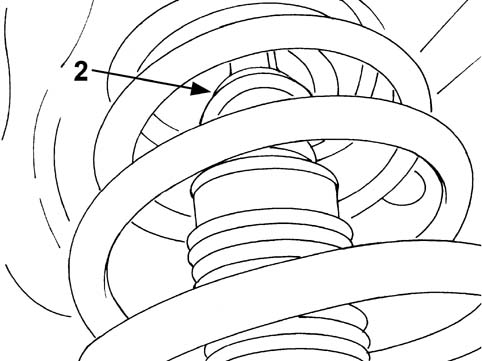

4410AA CHECK ON CORRECT FITTING OF END OF TRAVEL BUFFER ON FRONT SHOCK ABSORBER
- Path
- Test > 44 SUSPENSION AND WHEELS > 4410 FRONT SUSPENSION > 4410A FRONT DAMPERS AND SPRINGS > 4410AA CHECK ON CORRECT FITTING OF END OF TRAVEL BUFFER ON FRONT SHOCK ABSORBER
- Kind
- test / check procedure
- Applies to
- all engines; all production periods
- Interactive page
- https://sloeber94.github.io/elrnDB-fPnd/en/#/169000983
Applies to: all engines; all production periods
- Position the vehicle on a two column lift.
1. Raise the vehicle and check that, with the shock absorber unladen, the dust cover is against the shock absorber retaining collar.

2. Also check that the end of travel buffer is correctly fitted on the shock absorber upper mounting.
